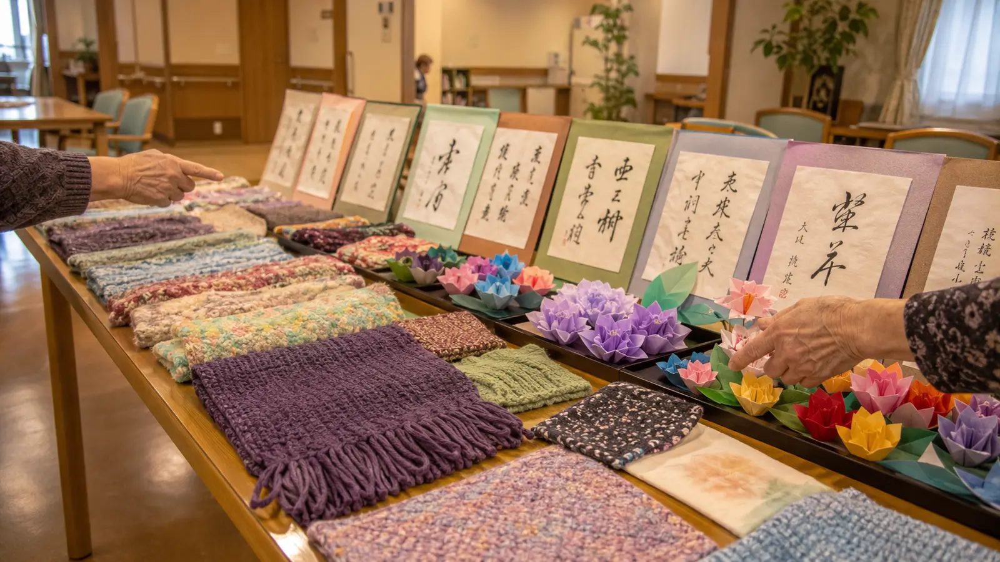

和装と、冬支度 — ★ 目標支援者数 25万人 達成
11月は、深まる秋と、来る冬への準備が交差する月でした。和装の日、地元朗読サークルとの交流、暖房・加湿器の設置など、心の温かさと体の温かさの両方を整えました。そして — Care Support Pass の支援者数が、ついに当施設の目標 25万人 を突破。スタッフ全員に賞与¥50,000を支給し、入居者の月額負担も ¥150,000 → ¥140,000 へと更に減額しました。
数字で見る今月
今月の主な瞬間

今月のひとこま


今月の活動
★ 目標支援者数 25万人 達成
11月11日、Care Support Pass の支援者数が、当施設の目標 25万人 を突破しました(達成日の累計支援者数 256,000名 / 達成率 102.4%)。Care Support Pass 導入からわずか6ヶ月でこの目標を達成できたのは、ひとえに全国の支援者の皆様、そしてこの仕組みを広めてくださった協力企業の皆様のおかげです。スタッフ全員に賞与¥50,000を支給し、入居者の月額負担も ¥150,000 → ¥140,000 へと更に¥10,000の減額を実施しました。
和装の日
11月15日、七五三にちなんで「和装の日」を開催しました。ご自宅から着物をお持ちの入居者の方には、スタッフがお手伝いをして着付け。背筋がしゃんと伸び、表情も誇らしげに変わっていく姿が印象的でした。お持ちでない方には、施設で用意したショールや羽織でちょっとした晴れ着気分を。「鏡に映る自分が、自分じゃないみたい」と笑顔の方もいらっしゃいました。
地域の朗読会
11月3日、地元の朗読サークル「日本橋ことのは会」の皆様が、ショートストーリーの朗読会を開催してくださいました。星新一・宮沢賢治・向田邦子 ── 入居者の方々が懐かしさを感じる作品ばかりの選定で、終演後の質疑応答も盛り上がりました。
来月の予定
- 12月13日: 大掃除 (入居者の方々もお部屋の小掃除に参加)
- 12月20日: クリスマス会 (スタッフによる生演奏)
- 12月25日: お正月準備 (門松・しめ縄の飾り付け)
- 12月末: 年末年始の医療体制確認 (年中無休の訪問診療体制)
支援者数 と 収支報告
★ 目標支援者数 25万人 達成。スタッフ全員賞与(¥50,000 × 16名 = ¥800,000)、入居者月額負担を ¥150,000 → ¥140,000 へ更に減額(月¥10,000 × 15名 = ¥150,000の追加軽減)。